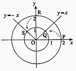
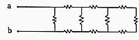
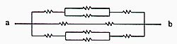
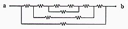
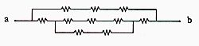
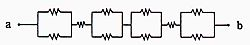
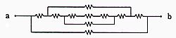

- \(75\)
- \(125\)
- \(900\)
- \(1000\)
- \(1225\)
Mathematics·Studies (I)
Nat. Sciences
\(A*B=(A\cap B)\cup(A\cup B)^C\).
Which option below is not
always true?
(※ \(U\ne\varnothing\))
[2 points]
- \(A*U=U\)
- \(A*B=B*A\)
- \(A*\varnothing=A^C\)
- \(A*B=A^C*B^C\)
- \(A*A^C=\varnothing\)

- \(-\dfrac{1}{16}\)
- \(\dfrac{\sqrt{2}}{8}\)
- \(\dfrac{1}{16}i\)
- \(\dfrac{\sqrt{2}+i}{8}\)
- \(\dfrac{-1+\sqrt{2}}{16}\)
 ).
Which option below has the same topology with this circuit?
[2 points]
).
Which option below has the same topology with this circuit?
[2 points]

- 
- 
- 
- 
- 
\(0.8\) if the average summer temperature of that year is higher than the previous year,
\(0.6\) if it is about the same as the previous year,
and \(0.3\) if it is lower than the previous year.
According to the weather forecast, the average summer temperature of the next year will be higher than this year with a probability of \(0.4\),
about the same as this year with a probability of \(0.5\),
and lower than this year with a probability of \(0.1\). What is the probability that this company will reach the annual sales quota in the next year? [2 points]
- \(0.55\)
- \(0.60\)
- \(0.65\)
- \(0.70\)
- \(0.75\)